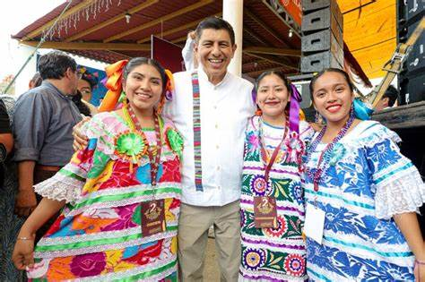

En el departamento de Jalapa, el idioma predominante es el español. Sin embargo, también se pueden encontrar hablantes de lenguas indígenas, como el Poqomam, aunque en menor medida. La diversidad lingüística en Guatemala es rica y variada, y Jalapa no es la excepción.
El idioma es una parte esencial de la identidad cultural de Jalapa, y se puede observar en la literatura, la música y las expresiones cotidianas de sus habitantes.
Volver